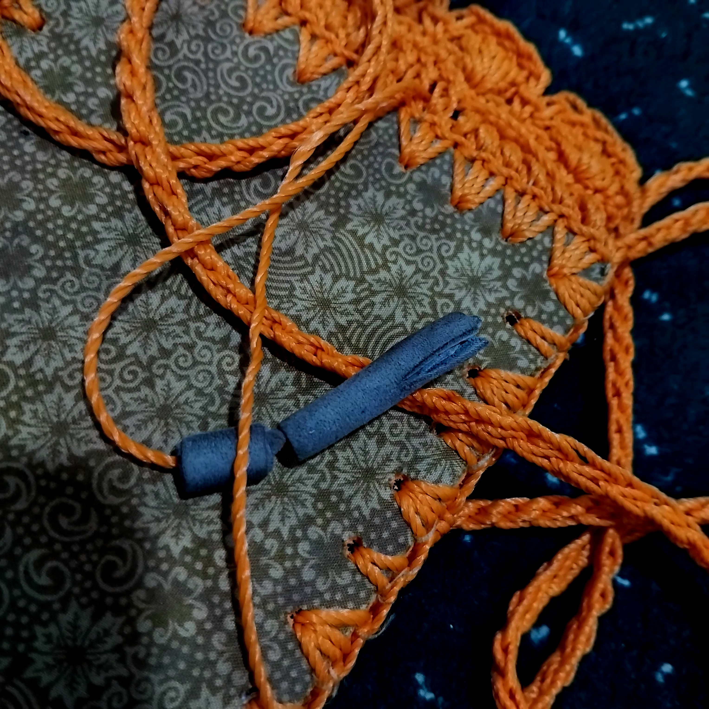

.png)
The Twist of First Impression
As someone who has a little struggle with anxiety to meet people, especially for the first time, I’m certain that first impressions are crucial. I believe that people will agree that the impression on the first time we meet a certain someone is highly memorable. It often becomes one of the key memories we have about that person. As a result, the first impression builds up our perspective toward that someone. We even might be able to list several traits/characteristics of some people just based on how we see them the first time. When you enter a new place full of unfamiliar faces, then finally talk to some of them, you’ll create impressions of them. I’m sure you’d sort the ones who talk to you as the friendly cheerful ones, meanwhile the others who don’t as the cold or shy people. Then, you start to notice more of their actions so that you would have more characters tagged to everyone.
However, as special as they are, first impressions are not always accurate. I remember the first time I came to middle school as a student, we were lined up under the bright sunlight. The new students were sorted into groups/classes for the next week’s school introductory activities. I knew no one in my class/group, so I tried to make friends. I started to make eye contacts with my group mates, and probably gave my best smiles too! I still recall vividly seeing one of my group mates, but she didn’t seem in a quite good mood. Her tired face with no smile at all. I went like, “Oh, she doesn’t want to make friends just yet, I guess”. I didn’t see much of her that day anymore, but years later, up till now, she’s one of my closest friends ever.
To end this piece, I totally believe that first impressions are precious, it might be like the first page of a book that determines whether the book’s worth reading more or not. Yet, they are not always accurate. Sometimes it takes a few more pages to understand the book.